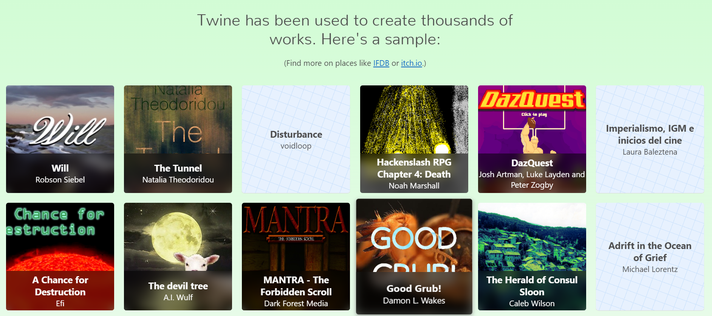

You can tell your own interactive story using Twine — a browser-based tool for creating interactive fiction with minimal coding. By the end of this week, you will be able to create your own water story that you can then share with friends and family.
This week's workshop is based on examples created by Anna Anthropy for the book Make Your Own Twine Games!, published by No Starch Press. You will be provided with a copy of the book for the workshop!
Here are some examples of the types of games we'll be making this week.
Please be aware that the game gallery on the Twine website is a community page so, as with all things on the Internet, use discretion when opening a game.
Here is the detailed schedule for this week:
Sign up at the CoderDojo Community page.
Back to the Summer Worskhop 2023 page.
CoderDojo Tucson is a dojo of the CoderDojo Foundation, which is part of the Raspberry Pi Foundation.